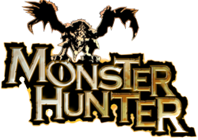

<!DOCTYPE html>
<html>
    <title>Monster Hunter</title>
    <link rel="stylesheet" href="../style.css">
    <link rel="icon" href="../gameImages/mh1Logo.png">
</html>
<body>
    <div>
    <h1></h1>
    <p>Monster Hunter is a hack and slash, strategy, adventure game, which releasedon PS2 in September 21st 2004 in North America. The game is a simulation fo hunting in a world filled with deadly monsters. With skill and provided items you can successfully kill or capture a monster. Due to no advertising it sold poorly in Europe and America. In its native land, Japan, it was a huge success.</p>
    <h1>Online Multiplayer</h1>
    <p>Like the game was intended to Monster Hunter had a online multiplayer, which lets the player decide between 2 Servers (Red World and Green World) and then a Town Area going from A to Z. In the town there were up to 8 players who then could play quests with up to 4 man.</p>
    <p>Unfortionatly the multiplayer was shut down on PS2 in January 1st, 2008 and so there were less and less hunters because you could do less in offline mode.</p>
    
    <table>
        <tr>
            <td>Release Dates</td>
            <td>
                <ul>
                    <li>Japan - 11th March 2004</li>
                    <li>North America - 21 September 2004</li>
                    <li>Europe - 27 May 2005</li>
                </ul>
            </td>
        </tr>
        <tr>
            <td>Flagship Monster</td>
            <td>Rathalos</td>
        </tr>
    </table>
    </div>
    <footer>
        
        <p>I'm Lukas and am a huge Monster Huner fan and that's why I made my wiki about the game.</p>
    </footer>
</body>